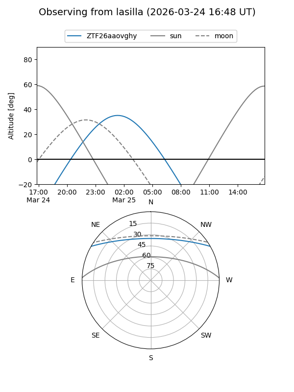
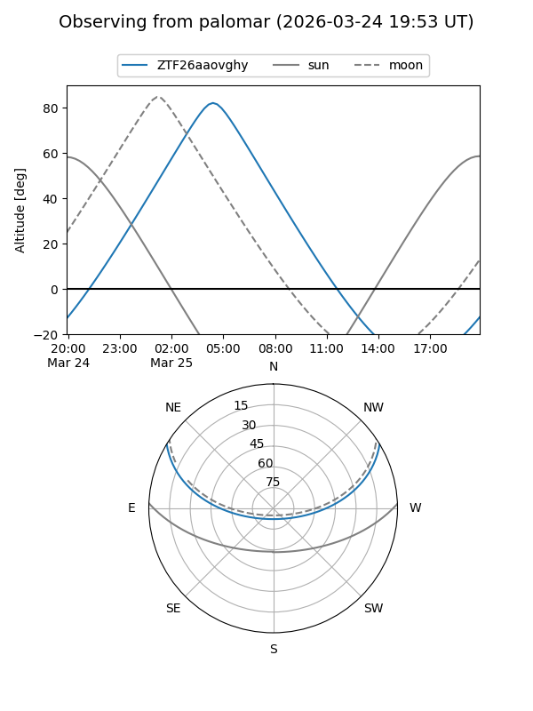

ZTF26aaovghy
Target ZTF26aaovghy at 2026-03-25 08:12
Aliases and brokers:
FINK: link
Lasair: link
ALeRCE: link
alt names
ZTF26aaovghy (ztf,fink_ztf)
Coordinates:
equatorial (ra, dec) = 131.4667,+25.67043
equatorial (HMS+DMS) = 08:45:52.02,+25:40:13.56
galactic (l, b) = (199.5146,+35.56315)
Flags:
Photometry:
last ztfg=17.49
1 ztfg detections
Lightcurve
Visibility


Additional plots